Бісквіт
Розігріваємо духовку й печемо бісквіт. Він має відпочити, щоб стати вологим і ніжним.
пахне ваніллю ♥

( Cake atelier · Alkmaar )

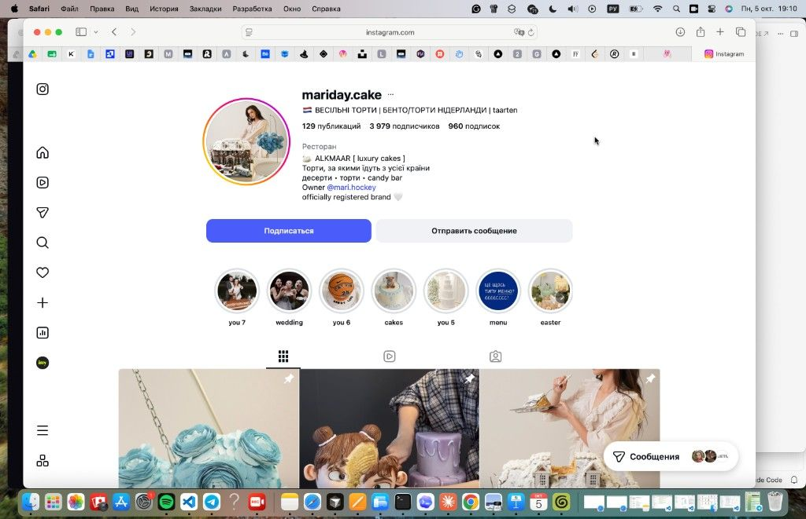
@mariday.cakeофіційно зареєстрований бренд · Alkmaar, NL
( Маніфест )
Ми не печемо «просто торти». Ми створюємо головну сцену свята — з квітів, ягід, глянцю і смаку, за яким повертаються знову. За тортами Mariday їдуть з усієї країни.
( 01 ) Історія в чотирьох розділах
Mariday не з'явилась за один день. Вона росла торт за тортом — з кожним «а можна ще?» від друзів, з кожним повідомленням у Direct від людей, яких ми ще не знали.
Усе почалося з тортів для своїх: дні народження друзів, сімейні свята, «просто так» у неділю. Рецепти записувалися від руки в зошит, а кожен бісквіт переписувався по п'ять разів, поки не ставав ідеальним.
той самий зошит досі лежить у студії ♥
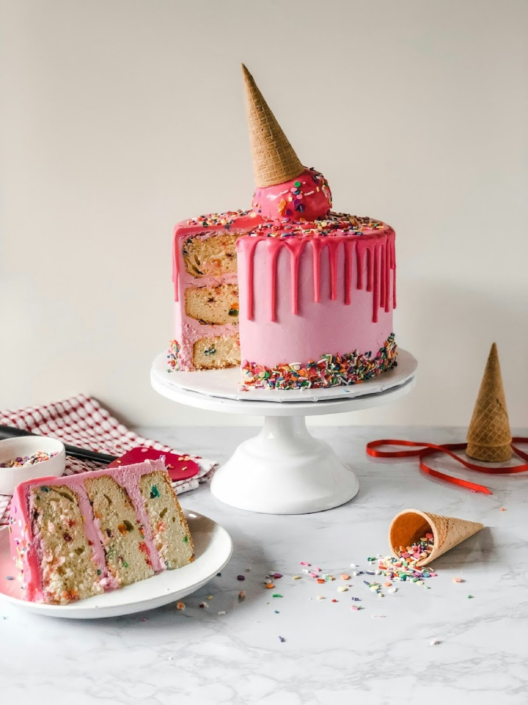
Фото тортів в Instagram почали пересилати знайомі знайомих. Так з'явилися перші замовлення від незнайомців — і перше правило: кожен торт має виглядати так, щоб його хотілося сфотографувати, і смакувати так, щоб про фото забули.
сьогодні — понад 3 900 підписників
Mariday стала зареєстрованим брендом із власною студією в Alkmaar, меню з дев'яти фірмових смаків і чіткими правилами якості. Тут народилися весільні яруси, бенто та перший candy bar під ключ.
9 смаків, які ми не змінюємо заради трендів

Сьогодні за тортами Mariday приїжджають з різних міст, а ми самі возимо яруси на весілля по всій країні. Але підхід лишився домашнім: один торт — одна історія, і кожну ми ведемо особисто.
Подивитися один день у студії ↓( Один день у студії )
Розігріваємо духовку й печемо бісквіт. Він має відпочити, щоб стати вологим і ніжним.
пахне ваніллю ♥
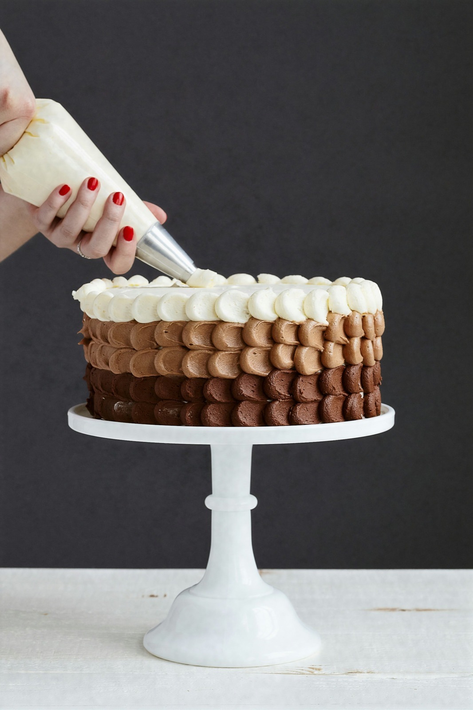
Збиваємо кремчиз, варимо конфі з ягід, готуємо карамель — без жодних «замінників».
тільки справжні вершки
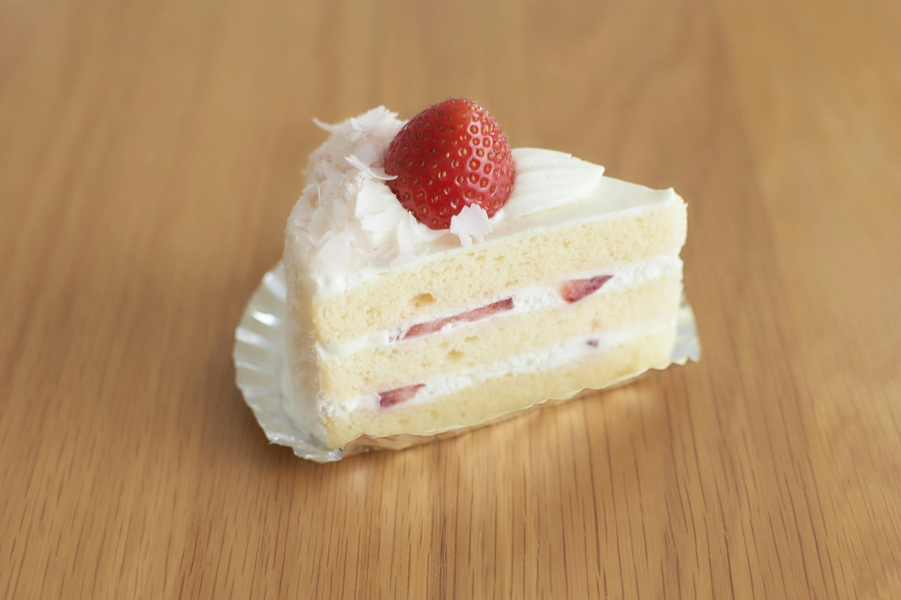
Шар за шаром: бісквіт, крем, начинка. Вирівнюємо кожен ярус до міліметра.
рівно, як по лінійці
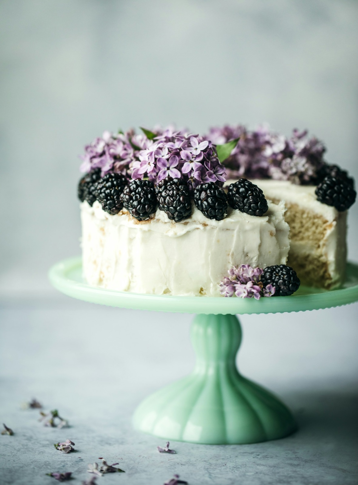
Квіти, ягоди, глянець, золото чи напис — оживляємо ваш референс руками.
кожна квітка — вручну
Знімаємо готовий торт при денному світлі — і показуємо вам першими.
👀 дивіться в сторіс
Пакуємо в коробку, видаємо в Alkmaar або веземо на свято по всій NL.
і торт ваш ♥
( 02 ) Цінності
натисніть картку — вона перевернеться ↻
Без прискорення й фільтрів: крем, шпатель, кілька годин тиші — і ось він, головний гість вашого свята.
( 03 ) Кодекс студії
Ми записали їх на стіні студії, щоб не забувати навіть у найгарячіший тиждень перед Новим роком.
( 04 ) Склад

( 05 ) Портфоліо
перетягуйте й кидайте фото ↯
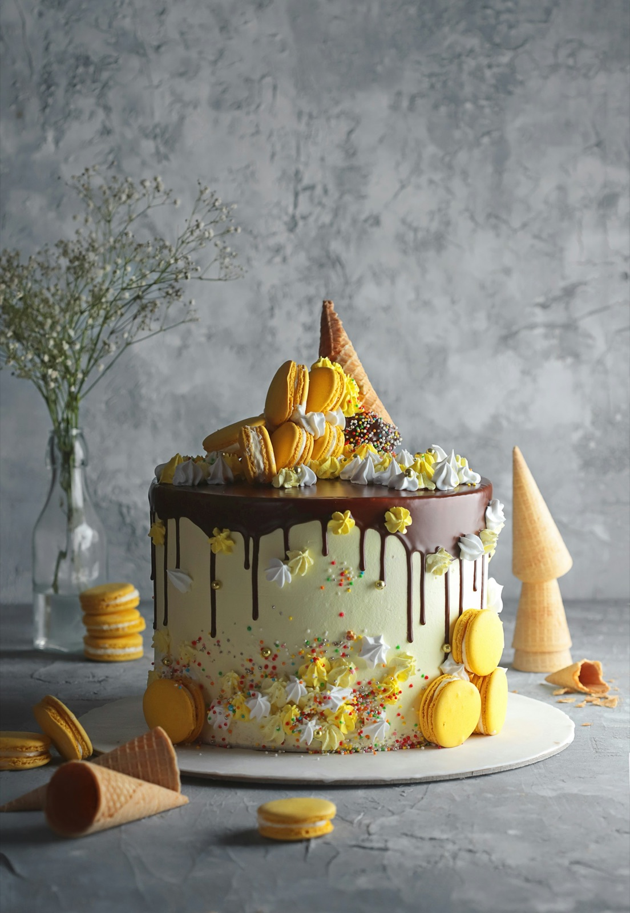
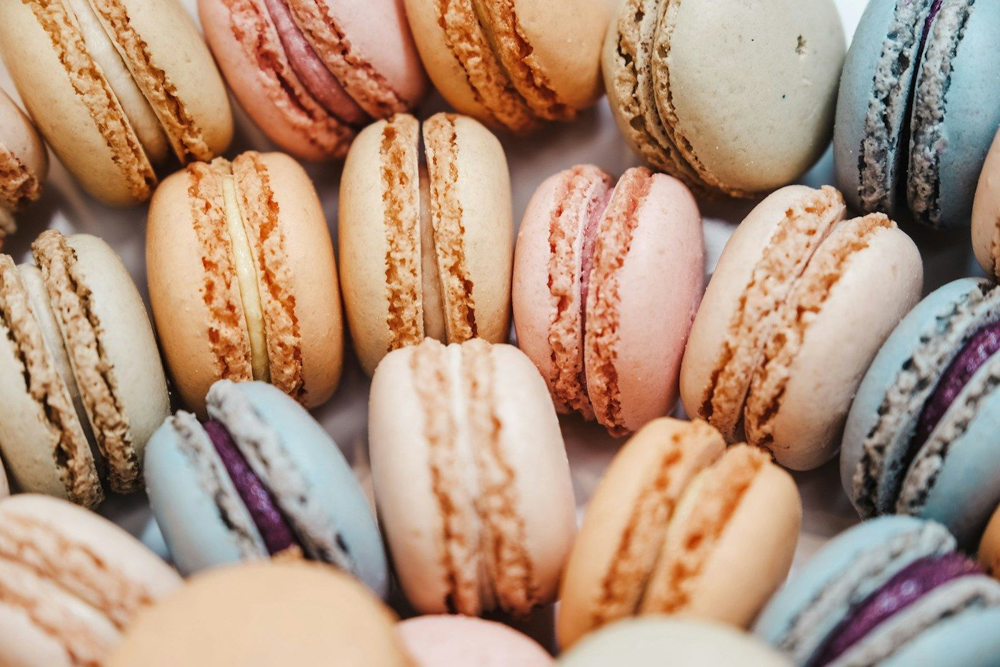
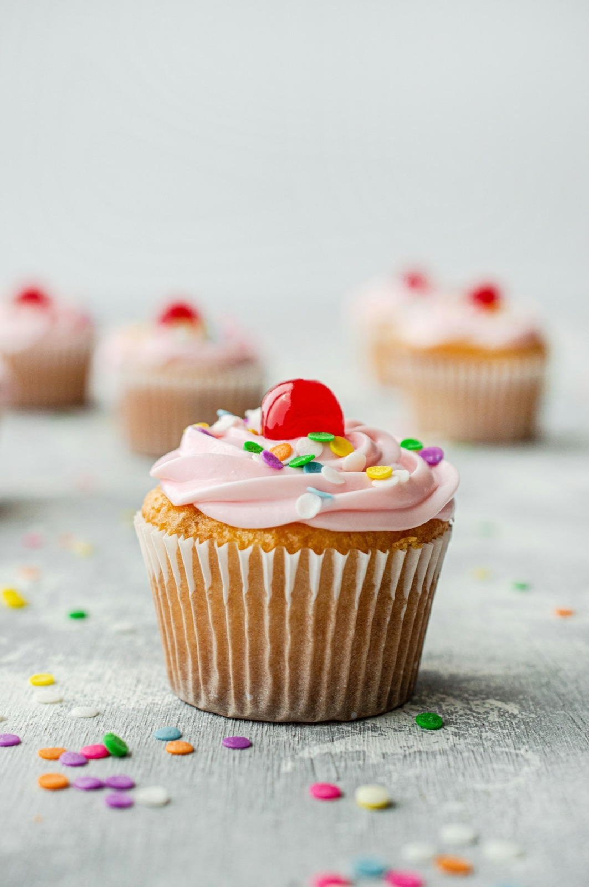
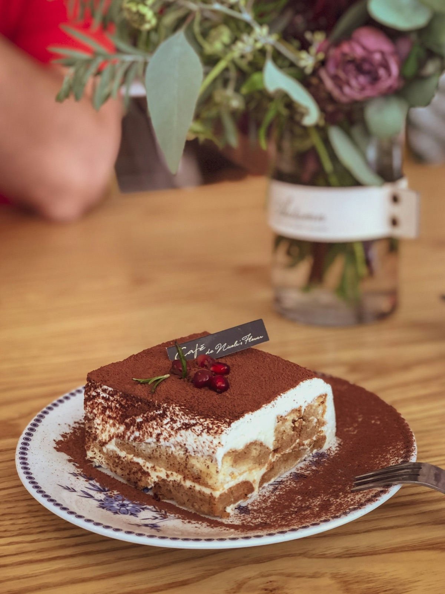
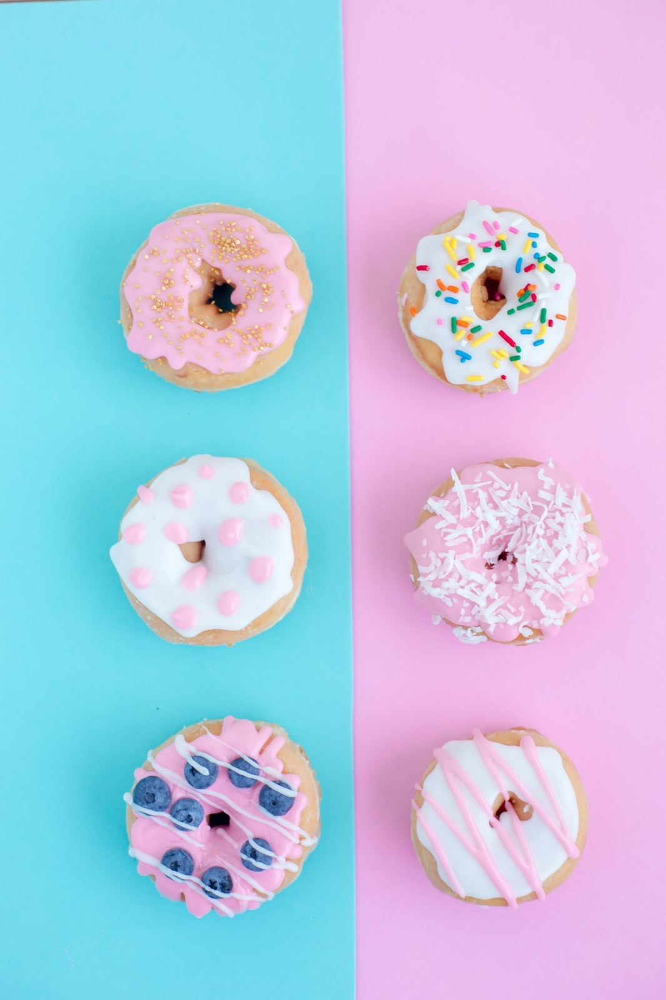
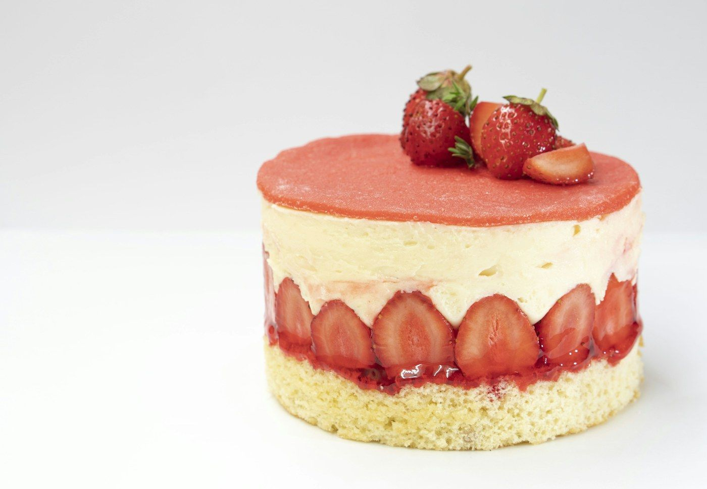
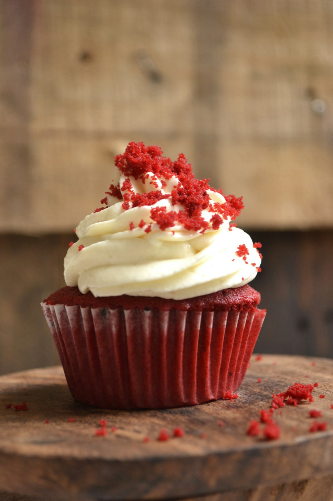
«Кожен торт — маленька історія. Спочатку ми її малюємо, потім печемо, а потім дивимося, як вона робить чиєсь свято. Дякую, що обираєте нас ♥»
— @mari.hockey, засновниця Mariday
( 07 ) Читати далі